1、主要事件类型：
| 事件 | 触发 | 次数 |
|---|---|---|
| MotionEvent.ACTION_DOWN | 按下View（所有事件的开始） | 发生一次 |
| MotionEvent.ACTION_UP | 抬起View（与DOWN对应） | 发生一次 |
| MotionEvent.ACTION_MOVE | 滑动View | 发生多次 |
| MotionEvent.ACTION_CANCEL | 结束事件（非人为原因） | 发生一次 |
2、事件分发过程由哪些方法协作完成？
| 方法 | 作用 | 调用时机 |
|---|---|---|
| dispatchTouchEvent | 逐层分发事件 | 事件被传递到时调用 |
| onInterceptTouchEvent | 判断是否要拦截某个事件，只在ViewGroup中存在 |
在ViewGroup的 |
| onTouchEvent | 处理事件 |
3、流程图 
4、源码简析 第一层：Activity
#Activity
public boolean dispatchTouchEvent(MotionEvent ev) {
// 一般事件列开始都是DOWN事件，故此处基本是true
if (ev.getAction() == MotionEvent.ACTION_DOWN) {
onUserInteraction();
// ->>分析1
}
// ->>分析2
if (getWindow().superDispatchTouchEvent(ev)) {
return true;
// 若getWindow().superDispatchTouchEvent(ev)的返回true
// 事件分发过程结束。
}
// 如果上一步返回false，最后调用Activity#onTouchEvent来处理事件
// ->>分析3
return onTouchEvent(ev);
}
#Activity
// ->>分析1
public void onUserInteraction() {
//该方法默认为空方法，一般可用来实现屏保功能，当用户和屏幕有交互时，此方法被调用
}
#Window
// ->>分析2
@Override
public boolean superDispatchTouchEvent(MotionEvent event) {
//调到DecorView中
return mDecor.superDispatchTouchEvent(event);
}
#DecorView
public boolean superDispatchTouchEvent(MotionEvent event) {
// 调用父类的方法 = ViewGroup的dispatchTouchEvent
// 即将事件传递到ViewGroup去处理
// ->>分析4
return super.dispatchTouchEvent(event);
}
#Activity
// ->>分析3
//事件最后的处理者
public boolean onTouchEvent(MotionEvent event) {
// ->> 分析5
//shouldCloseOnTouch时结束activity
if (mWindow.shouldCloseOnTouch(this, event)) {
finish();
return true;
}
return false;//默认不处理，返回false
}
public boolean shouldCloseOnTouch(Context context, MotionEvent event) {
// 主要是对于处理window边界外点击事件的判断
if (mCloseOnTouchOutside && event.getAction() == MotionEvent.ACTION_DOWN
&& isOutOfBounds(context, event) && peekDecorView() != null) {
return true;
}
return false;
}

第二层：ViewGroup
public boolean dispatchTouchEvent(MotionEvent ev) {
//对DOWN事件特殊对待？
if (action == MotionEvent.ACTION_DOWN) {
if (disallowIntercept || !onInterceptTouchEvent(ev)) {
// 判断值1：disallowIntercept=是否禁用事件拦截的功能(默认是false)，可通过调用requestDisallowInterceptTouchEvent修改
// 判断值2：调用onInterceptTouchEvent判断是否拦截此事件
final View[] children = mChildren;
final int count = mChildrenCount;
//遍历child
for (int i = count - 1; i >= 0; i--) {
final View child = children[i];
//判读child可见性
if ((child.mViewFlags & VISIBILITY_MASK) == VISIBLE
|| child.getAnimation() != null) {
//判断点击位置是否在child覆盖范围内
if (frame.contains(scrolledXInt, scrolledYInt)) {
//让child做事件分发
if (child.dispatchTouchEvent(ev)) {
//找到消费掉事件的那个child了，记录下来后，
//后续事件都直接发给它，不再给其他child机会了
mMotionTarget = child;
return true;
}
}
}
}
}
}
final View target = mMotionTarget;
if (target == null) {//如果之前没有child对事件感兴趣
ev.setLocation(xf, yf);
//调用View的dispatchTouchEvent方法
return super.dispatchTouchEvent(ev);
}
//到这里，表示之前有一个View对触摸事件感兴趣
//是否是要结束的事件
boolean isUpOrCancel = (action == MotionEvent.ACTION_UP) ||
(action == MotionEvent.ACTION_CANCEL);
// if have a target, see if we're allowed to and want to intercept its
// events
if (!disallowIntercept && onInterceptTouchEvent(ev)) {
//事件直接交给target处理
if (!target.dispatchTouchEvent(ev)) {
}
// clear the target
mMotionTarget = null;
//结束事件分发
return true;
}
if (isUpOrCancel) {
mMotionTarget = null;
}
//事件还是直接交给target处理
return target.dispatchTouchEvent(ev);
}
public boolean onInterceptTouchEvent(MotionEvent ev) {
//默认不拦截
return false;
}
第三层：View 这里View既可以是第二层的ViewGroup，也可以是ViewGroup中的Child
public boolean dispatchTouchEvent(MotionEvent event) {
if (mOnTouchListener != null && (mViewFlags & ENABLED_MASK) == ENABLED &&
mOnTouchListener.onTouch(this, event)) {
return true;
}
//先给TouchListener处理的机会，然后才轮到自身的onTouchEvent
return onTouchEvent(event);
}
onInterceptTouchEvent：
-
如果返回值是true，代表事件在当前的viewGroup中会被处理，向下传递之路被截断，同时把事件传递给当前的控件的onTouchEvent()继续进行传递或处理。
-
如果返回值是false，即不拦截当前传递来的事件，会继续向下传递，把事件交给子控件的onInterceptTouchEvent()。
onTouchEvent：
-
如果返回值是true，表示消费(consume)了这个事件。以ACTION_DOWN为例，如果某个控件的onTouchEvent返回值为true，则后续的n个ACTION_MOVE与1个ACTION_UP都会逐层传递到这个控件的onTouchEvent进行处理。
-
如果返回值是false，则会将ACTION_DOWN传递给其父ViewGroup的onTouchEvent进行处理，直到由哪一层ViewGroup消费了ACTION_DOWN事件为止。